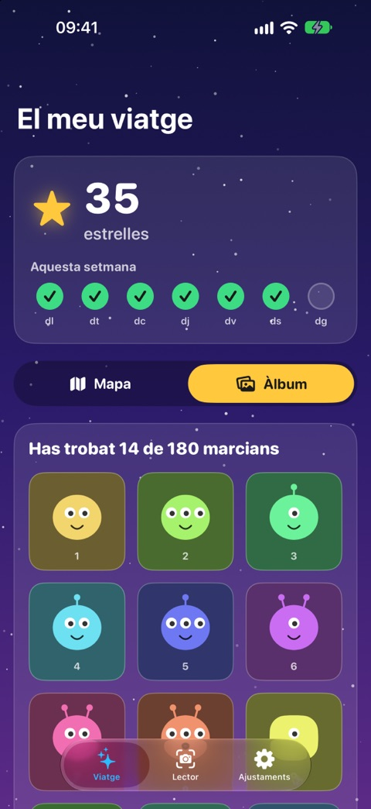
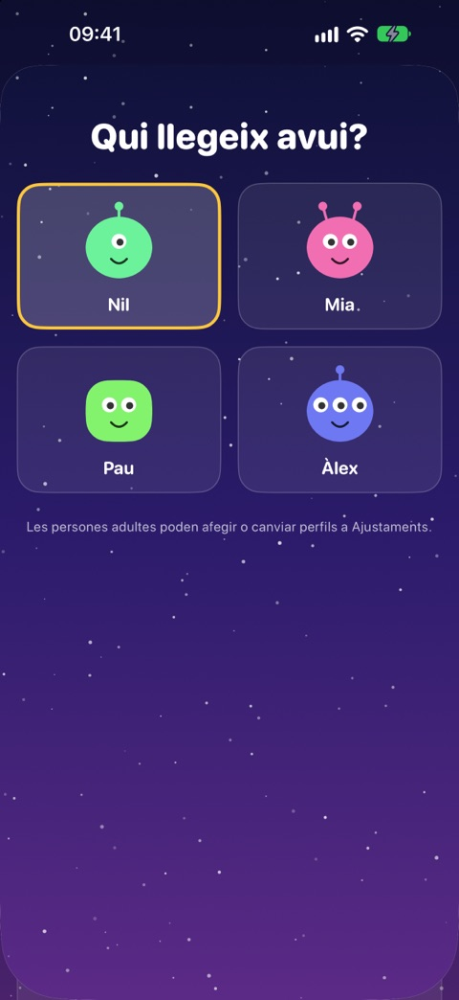

Què hi trobaràs
Exercicis pas a pas
Més de 180 exercicis en 8 blocs, de les vocals i les síl·labes directes fins a les frases i els textos breus. Cada exercici combina escalfament oral, taules de síl·labes, paraules de marcià, paraules de veritat, dictat i comprensió.
La persona adulta acompanya
Lieger no corregeix sola: l'adult escolta, marca les paraules que han costat, cronometra tres lectures i decideix si cal repetir o avançar. Cada pas té una guia.
Un viatge amb marcians
Cada exercici dona estrelles i descobreix un marcià nou per a l'àlbum. Sense ratxes que es perdin, sense competicions i sense missatges negatius: repetir no és fallar.
Lector amb la càmera
Fotografia un text o importa'l d'una foto i Lieger el mostra amb lletra gran, síl·labes de colors o separades amb punts, majúscules i espaiats a mida. Pensat per facilitar la lectura també als infants amb dificultats o trastorns de la lectura.
Un perfil per a cada infant
Fins a 8 perfils al mateix dispositiu, cadascun amb el seu viatge i els seus ajustaments de lectura. Sense comptes, sense correu i sense dades personals.
Català i castellà
Els exercicis existeixen en les dues llengües, adaptats a cadascuna (no són traduccions). Tipografia per a primers lectors i paper sense distraccions.
Mira-la per dins


Com funciona
- L'infant llegeix l'exercici: taules de síl·labes, paraules de marcià, paraules de veritat, frases o un text breu.
- L'adult escolta, toca les paraules que han costat i cronometra tres lectures de la mateixa taula.
- L'adult decideix si cal repetir o avançar. L'infant guanya estrelles i troba un marcià nou.
Gratuït i compra única
Els 3 primers exercicis de cada bloc i una captura setmanal amb el lector són gratuïts. Una sola compra desbloqueja tots els exercicis i el lector sense límit. Pagament únic, sense subscripcions. Les compres queden protegides per una porta parental.
Lieger està inspirada en la recerca científica sobre l'aprenentatge de la lectura (consciència fonològica, síl·labes i lectura repetida) per ajudar els nens i les nenes a aprendre a llegir de manera progressiva i divertida.
Lieger és una eina per practicar la lectura; no és un tractament mèdic ni un diagnòstic.
Privacitat
No hi ha comptes ni registre, ni analítica, ni publicitat, ni seguiment. Tot el que fa l'app es queda al dispositiu. Llegeix la política de privacitat.